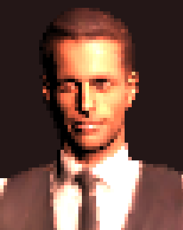

OSC in Unity
We control the spotlight on a character and its head movements using sensors in our phone.
Getting up and running . Light sensor, light intensity . Animation rigging . Phone orientation rotates the head
Getting up and running
Modern phones are a rich source of control signals, ripe for prototyping all sorts of interactions. Last semester we covered the basics of [OSC and HCI] with Processing, and for a refresh you can always check out the resources page. Make sure you have an app on your phone that can access its sensors and send OSC messages.
You have several choices for OSC libraries in Unity. Today we’ll use OscCore, a quick and modern implementation. Head to its releases page and grab the latest .unitypackage version.
Next, download this package containing the project we’ll be building upon. Start a new Unity 3D project and import both this package, and OscCore.
Next, open the scene in Assets > OscCore > Runtime > Scenes > Debug > Runtime Receiver Debug.
I’ve got my phone connected and sending OSC via the OscHook app,with the light and accelerometer streams activated. and running that scene results in:
f = float), and the values themselves.Now, there’s a high probability that Unity won’t make it this easy for you. It appears that the Unity Editor will only receive localhost UDP packetsi.e. from different apps on the same machine. , and not those coming from other IP’s.
There are two fixes you can try.Nope, allowing Unity through the firewall isn’t enough. At least for me…
One is, if you’re a Windows user, to disable your firewall. This should instantly turn on the stream.
If this fails, or if you don’t want to mess with your firewall (you probably shouldn’t), there’s a workaround: run this P5 sketch (or a similar script) to simply receive packets on port 8999 and forward them to port 9000. Now Unity will see the messages, as they’re coming from the same machine.
With this mess out of the way, let’s start doing things!
Light sensor, light intensity

Meet Eric, our virtual puppet.
Go back to our main scene, which contains a spotlight on a character. I especially chose the blandest possible character model, so that any one you replace it with is bound to be an improvement. Just make sure that yours is also (1) animated and (2) rigged, which describes a skeleton along the model’s elements.
The first thing to do is to make the light’s intensity dynamic, by tying it to our phone’s light sensor. OscCore lets us do this using components. On the Directional Light object, add an OSC Receiver component to handle all incoming messages on port 9000.or any number you choose to use, usually between 5000-13000. Then add another component, choosing OSC > Input > Float Input and set the current object as the receiver, and the address to /light. Floats coming on this address can now control any parameters in any component on the present object. Finish configuring it as follows:
If you run the project you should now see the light responding to you covering up the phone’s light sensor, or moving it around.There is a compile error that can occur, claiming that only one socket can be open on a particular address. This means that the debug scene has left the socket open. You can try to go back and disable it, or use a different port number, or just restart Unity. You might find, especially in the daytime, that the registered values are extremely high—you could scale them down using code, which means replacing the Float Input component with your own script. By the end of this lesson, you’ll be ready to give this a try. For now, let’s look at what Eric can do.
Animation rigging
This is a fairly new feature in Unity, which allows us to control certain components in a rig (i.e. bones in a skeleton) while the rest of the body is performing a predetermined animation. This video is a very good practical introduction, and you should probably watch it before you proceed.
Let’s quickly go over the steps involved, most of which follow the same procedure as the video.
Activate Animation Rigging in the Package Manager.
Select the character object and, from the main menu, do Animation Rigging > Bone Renderer Setup and Animation Rigging > Rig Setup.
You might then renamed the newly created Rig 1 object to something like animRig. Under it, create a child object and call it headAim. Add a component, Animation Rigging > Multi-Rotation Constraint.
There are many kinds of constraints available. We’ve chosen the one that best describes our use case: rotating the head object, which is found in Eric’s rig hierarchy (downstream from root). As the source of the constraint we will choose another newly-created child object under animRig, called rotationOsc:
head to rotate following rotationOsc.Add (this is optional) an editor gizmo for rotationOsc, and notice that when you run the project and rotate rotationOsc (either via the gizmo in the Scene view, or from the Inspector), Eric’s head rotates as well. Look for the Y and Z rotation values that produce a neutral position: in my case these are 90 and -90, respectively.They depend on how you’ve positioned Eric and the rotationOsc cube relative to each other. This also has repercussions on the following section.
Once this works as it should, you can add a chestAim object and constraint to make Eric move more of his body along with the head.
Phone orientation rotates the head
First, let’s take a moment to realise how the composition of forces acts on the phone’s body. We have the gravitational pull acting straight down: this means that, if your phone is lying on a table, the acceleration \(\vec{g}\), of magnitude \(g = 9.8 m / s^2\), is acting solely on the z axis.
As you start to tilt your phone, you’ll see \(\vec{g}\) being decomposed along the accelerometer’s other axes as well:
We can observe that, especially if we don’t make sudden moves, the 3 values in the accelerometer describe the phone’s orientation relative to the ground. This means we can use these parameters to set the orientation of our rotationOSC object.In fact, we have access to just two Euler angles: pitch and roll (Y and Z). The yaw (X), which would correspond to rotation around the Earth’s perpendicular, cannot be sensed by the accelerometer alone. For this a more complex device would be needed, such as a 9-axis IMU with sensor fusion.
{kind=link}
First, let’s get the accelerations into Unity. We will need to process the accelerometer readings before applying them to rotationOSC’s transform. This means we shall read them using code.
Attach a new script to the rotationOSC object and name it something like OscToRotation. Start by embedding your new class in OscCore’s namespace:
namespace OscCore.Demo
{
public class OscToRotation : MonoBehaviour
{
}
}
Inside our class, we need to access a Receiver and add methods to read the parameters.The code below works for the addresses produced by OscHook. If your app sends, for instance, messages like /accelerometer 0.01 0.01 0.98, then you would use a single Read() method with ReadFloatElement(0), ReadFloatElement(1) and ReadFloatElement(2).
public OscReceiver Receiver;
float x, y, z;
void Awake() {
Receiver.Server.TryAddMethod("/accelerometer/x", ReadX);
Receiver.Server.TryAddMethod("/accelerometer/y", ReadY);
Receiver.Server.TryAddMethod("/accelerometer/z", ReadZ);
}
void ReadX(OscMessageValues values)
{
x = values.ReadFloatElement(0);
}
I leave the implementation of ReadY and ReadZ to you. And don’t forget to populate the Receiver variable with the Directional Light object in the Unity Editor.
Now would be a good time to check that you’re seeing the values as expected: add a Debug.Log(x); and see if you have a stream of floats between -1 and 1.Some apps use a different range, like -10 to 10. In that case you would need to scale the numbers back down.
Finally, we can apply the mapping. Once we have the Euler angle values, we simply apply them to the transform:
void Update() {
float pitch, roll;
transform.eulerAngles = new Vector3(0f, pitch, roll);
}
This is the ideal problem to look up on stackoverflow. Not just in case our trigonometry’s rusty, but we can run across useful real-world tips like this one, for dealing with jitter-induced errors.
My suggestion is to implement pitch and roll one at a time, otherwise it’ll all seem very chaotic. Keeping yaw and roll at their default values (I’ve got 0 and -90), you can set the pitch:
pitch = -90 + Mathf.Atan2(-x, Mathf.Sqrt(y*y + z*z)) * 180/Mathf.PI;
I added the extra -90 by trial and error, by testing and seeing what looks good.As we saw before, this value might be different for you, depending on how you set up your scene. A more robust solution might be to make these rotation values interdependent, rather than hardcoding them. Once the pitch is under control, plug in the roll:
int sign = (z > 0) ? 1 : -1;
float miu = 0.001f;
pitch = -90 + Mathf.Atan2(-x, Mathf.Sqrt(y*y + z*z)) * 180/Mathf.PI;
roll = -90 + Mathf.Atan2(y, sign* Mathf.Sqrt(z*z+ miu*x*x)) * 180/Mathf.PI;
Again, an extra -90 in the roll gave me the best control over the forward-back movement of the character’s head. And there we have it, a creepy, shaky remote control puppet.

From here you could work on reducing the shakiness by adding some filtering to the x y z values, or try something fun like controlling Eric’s hand by swinging your phone.